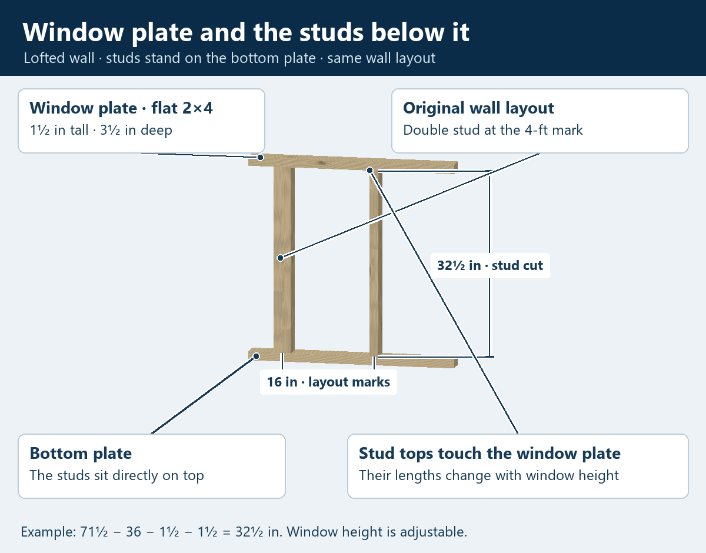
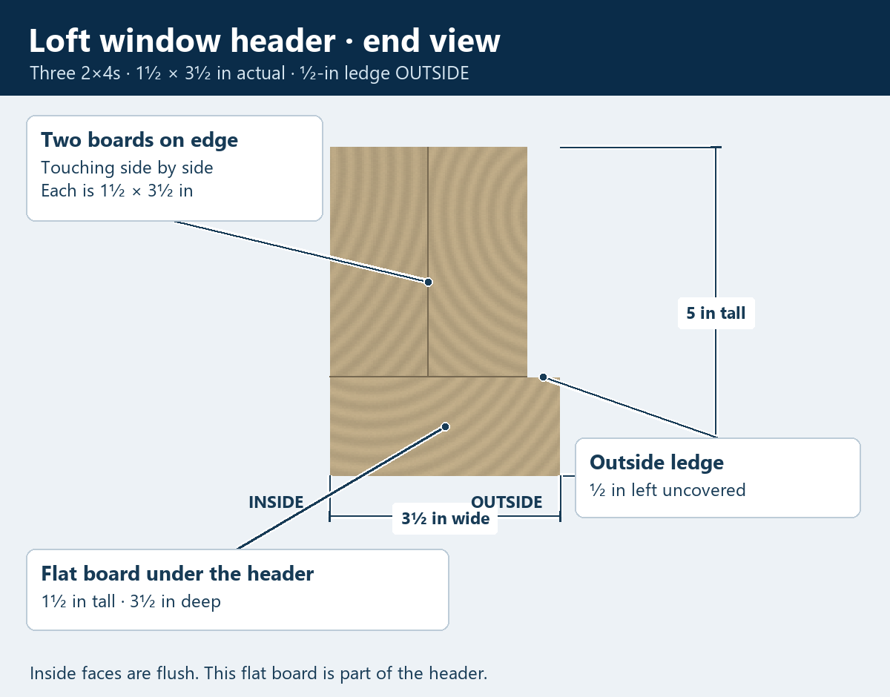
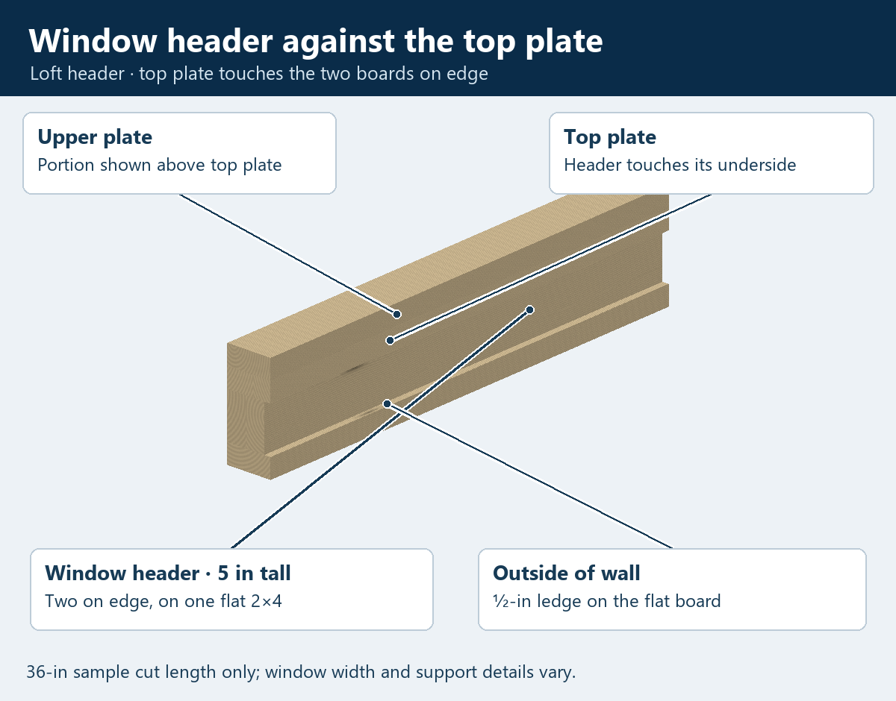

Lofted wall · Learning the window framing
Window header and window plate
Your loft header has two 2×4s on edge, touching side by side, on one flat 2×4. The whole header fits against the underside of the top plate.
The window plate below the opening lays flat. Its supporting studs sit on the bottom plate and follow the same 16-inch layout as the wall studs.
Window plate and the studs underneath

Look at the cut end

How it meets the wall plates

Rotate the learned framing
Drag to turn. Pinch or use + / − to zoom. The pictures above remain available if 3D cannot load.
Loading the measured framing…
Stud cut = header underside above flooring − clear window height − window-plate thickness − bottom-plate thickness.
71.5 − 36 − 1.5 − 1.5 = 32.5 inches
Terms for this lofted wall
- Window header / loft header
- The three-board assembly across the top of the window. The flat board directly under the two edge boards belongs to the header.
- Window plate
- The 2×4 across the bottom of the window opening. It lays flat: 1½ inches tall and 3½ inches deep through the wall.
- Studs under the window plate
- The uprights sit on the bottom plate and meet the window plate's underside. They keep the wall's 16-inch layout and its double studs at 4-foot marks. A taller window leaves shorter studs underneath.
This is the learned lofted-wall rule. The window's side framing and board-end joints are the next pieces to learn. “All learned pieces” shows an incomplete assembly. The layout keeps the wall lesson's provisional starting datum.